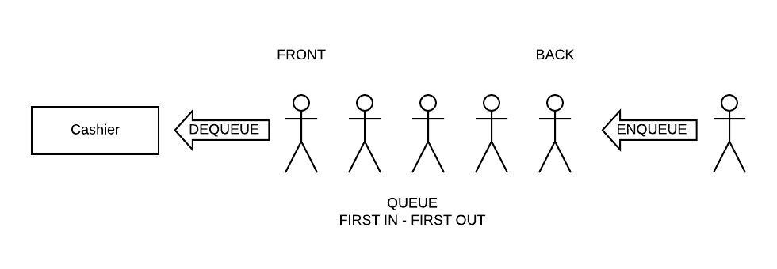
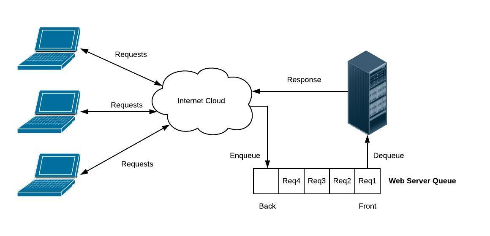

04 Prepare: Finding Defects / Queues
Overview
This week you will explore techniques to improve your ability to find defects in code. Your goal as a software programmer is to develop quality code to meet the needs of your customers. While you will obviously "inject" defects during the coding phase, you will "detect" those defects in various phases including: coding, review, testing, and deployment to customer (hopefully not the last one).
You will practice your skills at finding defects using code that implements the Queue data structure. You are still in the PREPARE phase of the course:

Here is the two day plan for this lesson:
Day 1 - Complete the reading below. The reading should take 1 hour to complete. For on-campus students, class time will be used to discuss the reading and explore Queues through examples. Online students should watch this video. You should begin independently to work on 04-Prove. You should plan on the assignment taking 3 hours to complete.
Day 2 - You will pair up with a student from your assigned study group to complete 04-Teach. On-campus students will complete this activity during class time. The activity should take 1 hour to complete. You should independently finish work on 04-Prove.
Strategies for Finding Defects
TBD
The Queue Data Structure
During the last lesson, you learned about the Stack. The Stack was "Last In, First Out" (LIFO) and was implemented using the Python list. The Queue is characterized as "First In, First Out" (FIFO) and can also be implemented using the Python list.
Grocery Story Queue
In the example below, we can see a line at a busy grocery store used to represent a Queue. The person next in line for the cashier is called the front and the person at the end of the line is called the back. When the person at the front is removed from the Queue was call this a dequeue operation. When a new person joins the Queue at the back, we call this a enqueue operation. Note that someone can not cheat and enter the line in the middle of the Queue.
Queues are used when we need to process a collection of requests in an orderly and fair way. Consider the following two common Queues used in software: the Web Server Queue and the Reader/Writer Queue.
Web Server Queue
A web server receives numerous HTTP requests for web pages from clients throughout the world. Each request requires the web server to send back information. The amount of time it takes to send that information makes it difficult to respond timely to all requests. This would be similair to a customer service desk that had only one phone. If the customer service agent is helping someone else, then no one would pick up your call. To solve the problem, a queue is used to pick up all the phone calls and transfer you to the customer service agent when they were ready for the next person.
The web server does the same thing. When a request is sent, it is put into a Queue until the web server can process the request. In this way, all requests are received and none of them are lost. Queues frequently have a self-imposed maximum size. If a Queue is full, then the software may need to send an error message back to the client.
Reader/Writer Queue
Frequently we have the need to run different software components concurrently (e.g. looks like they are running at the same time). Each component is called a Process or a Thread (if your curious, you can read about how this is done in python here). Each process will likely have their own set of variables that are maintained. Frequently, there is need to have shared data between the processes. The diagram below shows a variable which is being shared by multiple processes.

Processes P1 through P6 are all trying to use the variable at the same time. Processes P1, P2, and P3 are reading the variable and Processes P4, P5, and P6 are writing to the variable. The concurrent reading is not a problem. However, if everyone tries to both read and write at the same time, new and modified values may be missed or overwritten. One solution is to protect the code that that is writing to the shared data so that only one process can change the variable at a time. A Queue is used to ensure order and integrity. When a process wants to write, it is enqueued. When a process is dequeued, it is then allowed to modify the shared variable. When the process is done, then the next process is dequeued.
Queues in Python
Most Queues implemented in software will have the following basic functions:
enqueue(value) - Adds "value" to the back of the Queue
dequeue() - Remove the item at the front of the Queue and return it
size() - Return the size of the Queue
In Python, a Queue can be represented using a list. To dequeue an item from the front of the Queue, [0] can be used to obtain the first item and also delete it from the list. To enqueue an item to the back of the Queue, the append function can be used on the list. The size can be determined by using the len function on the list.
The performance of the Queue using a Python list is based on the performance of the dynamic array.
| Function | Description | Performance |
|---|---|---|
|
Performance of adding to the end of dynamic array | O(1) |
| dequeue() | Performance of removing from the beginning of dynamic array | O(n) |
| size() | Performane of returning the size of the dynamic array | O(1) |
The Python library also includes a class called deque which stands for Double Ended Queue which is more frequently used due to better performance. We will learn more about this in the future when we study Linked Lists.